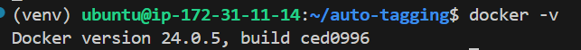
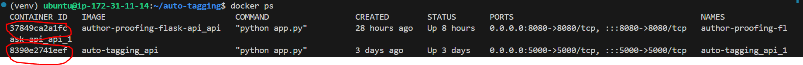

Part1
Docker
Docker makes Depolyment Easy and Reproducible by using Containers.
Version: 
What is Dockerfile:
-
A Dockerfile is a text document that contains all the commands a user could call on the command line to assemble an image.
-
is essential blueprint/recepie for constructing docker image.
-
It includes instructions such as what base image to use, what dependencies to install, what files to add, and what commands to run when the image is instantiated.
-
Dockerfiles are used to automate the creation of Docker images, ensuring consistency and reproducibility.
FROM python:3.9
WORKDIR /app
COPY requirements.txt .
RUN pip install --no-cache-dir -r requirements.txt
COPY . .
CMD ["python", "app.py"]
Image Size:
File1: with 48MB. Note that this doesn't come with python and its dependencies installed. hence the less size.
File2: with 1.21GB. Note that this python and its dependencies installed. also pandas is installed again. hence the Medium size.
File3: with 644MB. it has basic Ubuntu latest image, update it, install python3 and pip dependencies. Later install pandas only.
FROM ubuntu:latest
RUN apt update
RUN apt install python3 python3-pip -y
WORKDIR /app
COPY . .
RUN pip install pandas
CMD ["python","app.py"]
command to create DockerImage from the above Dockerfile.
- Step1: Build the Docker image.
try
docker-compose build -t imagename .to build the image. you can check the recently built image usingdocker image ls. you can remove the image usingdocker image rm -f image_name:tag. ordocker image rm image-id. docker run -p 80:80 imagename:tagto run the image. Doing this spins up new container automatically.docker run -it imagename:tag bashto run the bash shell. typeexitto get out of the bash.- if the process/code in
app.pyis still running, then you can see container runing live with commanddocker ps. To see all containers, usedocker ps -a. - remove unused image using
docker image prune -a.
Docker image prune vs docker image rm
docker image prune -a is used to remove dangling images (unused images with no tags), while docker image rm is used to remove specific images by their ID or tag, and it can remove both unused images and images in use by containers.
What is a Container:
Containers allow a developer to package(this package is nothing but an Docker image.) up an application with all of the parts it needs, such as libraries and other dependencies, and ship it all out as one package. With that, the Application can run on Any machine. This gives universal access to run on any machine.
Running Docker image creates Docker container.
How to create Docker Container:
You need an image called DockerImage to create Container. Docker Image is created from Dockerfile which is a text file created by user. refer to docker run command above in Dockerfile commands for dockerimage creation.
you can check Container-id from below example image: 
- if you want to stop the container running, then use command
docker stop containerid. - if you want to start the existing container, then use
docker start container-id. docker containers lsonly shows running containers.docker containers ls -allshows all available containers.- if you want to stop the container running, then use command
docker stop containerid. docker container pruneto remove unused containers.-aflag is not required, as we used to prune image above.
What is Multi-Image Container:
what is docker-compose.yml file:
Container holds a single image or multiple image. one don't need a docker-compose.yml file when it is a single image. docker-compose.yml file is used to create Multiple Images (or) stack (or) layers of Images.
Example:
-
Ubuntu base image
-
Node
-
mongodb
-
redis
Note: Each container runs on diferent port. docker-compose.yml file for single image:
version: "3.3" # this is docker-compose version
services:
api:
build: .
ports:
- "5000:5000"
volumes:
- ./data:/app/data
docker-compose upis to up the image (or) get image running live.docker-compose up --build -dHere,-dmeansDetachedmode from terminal. So you don't see logs running in terminal. without flag-d, it runs the logs in terminal.
What is port mapping
Any application that runs using docker, creates a container. Since container is a layer on top of os, the dependencies inside a container does not match with denpendencies in local. we can say the container is a whole different environment.
So to access the application running in that specific container on server(flask,streamlit,fastapi) with some port, we need to map it to the another local port. so we can access the specific application in local (or) in network url as well.
example in docker-compose.yml:
example in Dockerfile:
what is host mapping
Every server (or) even container runs on host address 0.0.0.0. so to access this address in local, we need to use 127.0.0.1 along with exposed port 8000.
References: piyush garg docker tutorial 1 piyush garg docker tutorial 2 Techworld with nana docker tutorial patrick tutorial on devcontainers